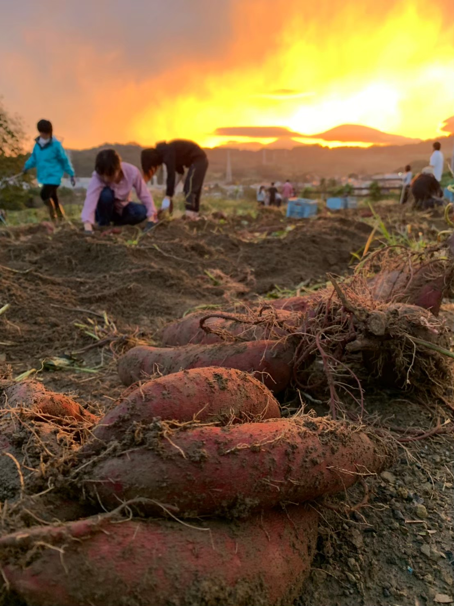

なぜAgrlienに入ったか…４
2020.07.12 弓長
なぜアグリアンに入ったか
弓長
農学系他大生がアグリアンに入るまで
はじめまして。アグリアンで活動して三年目になりますが初めてブログを書きました。すいません。東京農業大学三年の弓長です。メンバー紹介ページではカレーの絵の下に、はりーと書かれているのが私です。弓長→張→はり→はりーという感じでメンバーからは“はりー”と呼ばれています。なぜ”カレー”の絵なのかということについてはのちのちお話出来ればと思っています。
さて、ここからは私がなぜアグリアンに入ったのかを書きたいと思います。
私がアグリアンに入ったのは大学一年の七月です。冒頭にもあるように東京農業大学に通っているため、他大生としてアグリアンに参加していることになります。実学主義の大学であるため、学内にはアグリアンのような農業サークルはたくさんあり、七月までは学内の農業サークルに入っていました。農業サークルに入った理由は農学を学んでいる身として、農業をしないわけにはいかないと勝手に思っていたからです。
複数の農業サークル同士では意見交換会や合宿などの交流があり、農業について様々な角度から学ぶ仲間たちに多くの刺激をもらいました。しかし、そんな日々の中で私は井の中の蛙になっているのではないか。実は私たち農大生にはないような考え、知識やアイデアがあるのではないかと不安になりました。入学して三ヶ月で、生意気か！って感じですが。
そこで、「農学を学ぶ他の大学生とも関わりたい！」「どうせ入るなら東大とか面白そう！」「東大生って農業のことどんな風に考えているんだろう」と思いながらインターネットで検索をし、見つけたのがアグリアンでした。たしか 農業 インカレ 東大 とかで調べてたはず。
当時アグリアンのHPには禅龍寺の紹介がかなりの熱量で書かれてたので、「大丈夫かなこの怪しいサークル…」と思って連絡するのをずっと渋っていました笑。しかし、たまたま私が学内サークルの農業実習でお世話になっていたあきさわ園さんにアグリアンもお世話になっており、秋澤さんにお墨付きをもらったところでアグリアンと連絡を取り、今に至ります。入ってからも、怪しいサークル感はみじんもありませんでした。
二年活動しましたが、アグリアンの活動は贔屓目に見ても面白いです。
自分たちで作物を“育てる”だけでなく“売る”という、生産から消費までを学生が中心となって関わることが出来るということは他のサークルにはない魅力です。昨年の駒場祭ではさつま芋を加工することで三原堂さんときんつば、鈴木製餡所さんとはたい焼きでコラボ商品を出し、ますます進化するアグリアンにわくわくしています。
また、各メンバーのユニークさも魅力だと思っています。私はアグリアンの皆さんを尊敬し過ぎて会う度に拝みたくなります。…といったように、入った理由が入った後からたくさん出てくるくらい楽しく活動させていただいてます。
ここまで書いていたら色々思い出して、アグリアンのみなさんに感謝の念が溢れてきました。それでは溢れたところで終わりにします。
